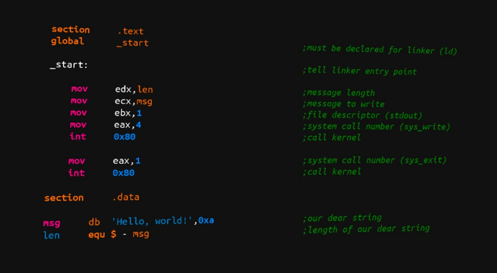
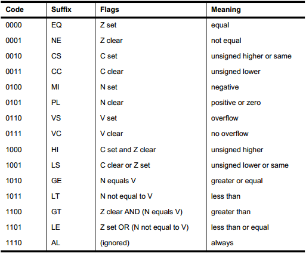
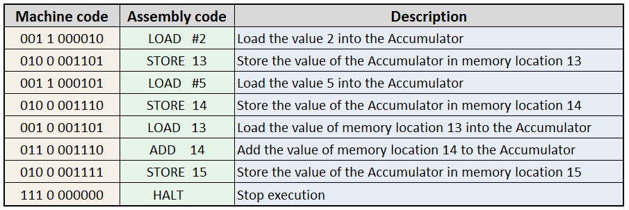

Introduction
Definition of assembly languages and their role in low-level programming.
Overview of the relationship between assembly languages and machine code.
Key Concepts in Assembly Languages
1. Mnemonics and Instructions:
- Explanation of mnemonics as symbolic representations of machine instructions.
- Examples of common instructions like MOV (move), ADD (addition), and JMP (jump).
2. Registers:
- Overview of registers as small, fast storage locations within the CPU.
- The role of registers in holding data and operands for instructions.
3. Memory Addressing:
- Understanding memory addressing modes for accessing data in memory.
- Examples of direct addressing, indirect addressing, and immediate addressing.
4. Assembly Directives:
- Introduction to assembly directives for defining data, sections, and other attributes.
- Examples of directives like DATA, CODE, and SECTION.

Assembly Language Syntax
Syntax Structure:
- Overview of the general structure of assembly language programs.
- Sections, labels, instructions, and comments.
Instruction Format:
- Explanation of the format of assembly instructions.
- Opcode, operands, and any addressing modes.
Comments:
- The importance of comments in assembly language code for documentation.
- Proper commenting practices for clarity.
Labels and Jump Instructions:
- Understanding labels as markers for specific locations in the code.
- The use of jump instructions (JMP) to control program flow.
Common Assembly Languages
x86 Assembly
- Introduction to x86 assembly language used in Intel and AMD processors.
- Overview of registers like EAX, EBX, and instructions like MOV, ADD, and JMP.
ARM Assembly:
- Overview of ARM assembly language commonly used in mobile devices and embedded systems.
- Registers like R0, R1, and instructions specific to the ARM architecture.
MIPS Assembly:
- Introduction to MIPS assembly language often used in academic settings and embedded systems.
- Registers like $s0, $t0, and MIPS instructions.
Programming in Assembly
Simple Assembly Program:
- Creation of a simple assembly program to demonstrate basic concepts.
- Loading values into registers, performing arithmetic, and storing results.
Conditional Branching:
- Implementation of conditional branching using jump instructions.
- Illustration of decision-making in assembly language.
Function Calls:
- Understanding the stack and implementing function calls in assembly.
- Handling parameters, local variables, and return addresses.
Data Manipulation:
- Examples of data manipulation tasks in assembly, such as string manipulation.
- Use of string instructions and memory operations.


Advantages and Challenges of Assembly Languages
Advantages:
- Precise control over hardware resources.
- High performance due to direct interaction with the hardware.
- Useful in embedded systems and low-level programming.
Challenges:
- Steeper learning curve compared to higher-level languages.
- Platform-dependent nature of assembly code.
- Debugging and maintenance challenges.
Conclusion
Recap of key points about assembly languages.
Emphasize the importance of assembly languages in low-level programming and system-level understanding.
Encourage developers to explore assembly languages for gaining insights into computer architecture and for specific tasks where performance is critical.